To Create a package open RStudio, on the menu browse
File > New Project > New Directory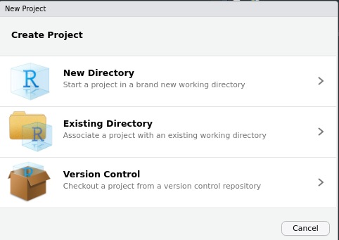
Then, from the following options choose R Package.
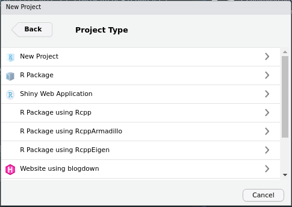
At this point, we need to assign the R Package a name and tell RStudio where to place the main folder containing our package files without our folder structure. Here, I’ve chosen to put it under the folder University and to call it PerfectRPackage.
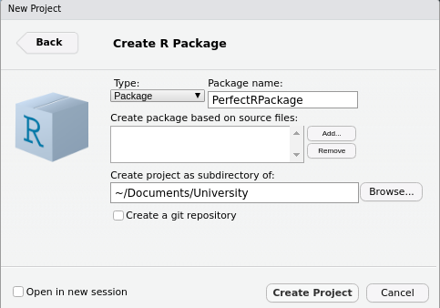
After this, RStudio will open a new session that should look like the following one, with a hello.R file and with a lot of new content such as
.Rbuildignore.Rproj.userDESCRIPTIONmanNAMESPACEPerfectRPackage.RprojR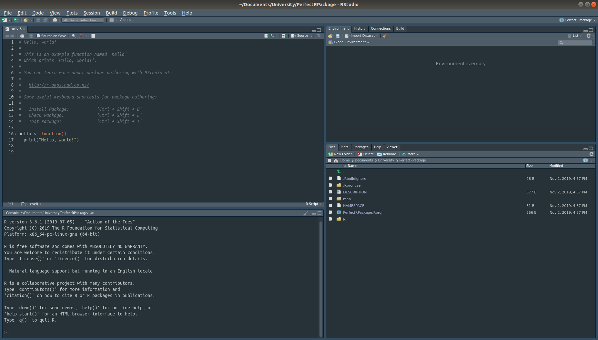
Now it’s time to create a GitHub repository. Browse inside the package directory, in this case called PerfectRPackage on the terminal. Type git init to initialize a repository, then follow it with git add . to stage all the new files created by RStudio when it created the package. Then, commit these staged changes using git commit -m"" and put some helpful message in between "". It should look something like this
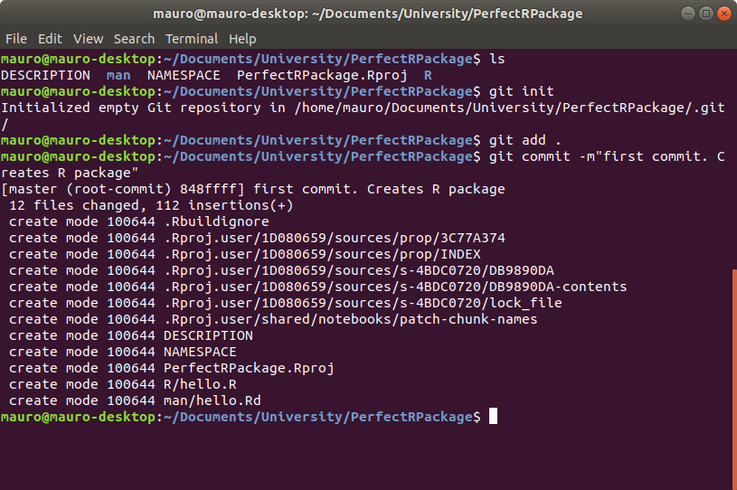
Now we need to create an upstream repository on GitHub. To do that, go on www.github.com, log in and click on the green button New to create a new repository
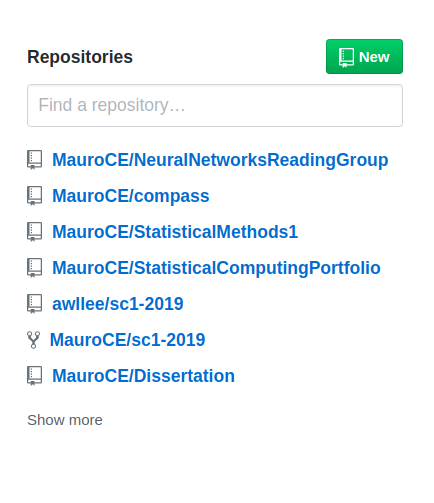
you will be directed to the following page where you can specify the name of the GitHub repository and add other details. I suggest naming it with the same name of the RPackage, in this case PerfectRPackage, to add a useful description, keep it Public, and to not initialize it with a README.md file just yet. Finally, click on the green button at the bottom saying Create Repository
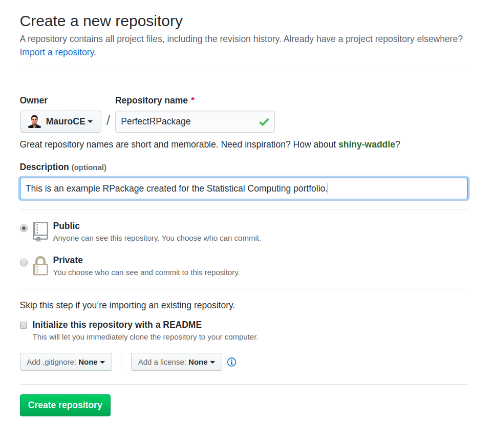
Scroll to the bottom, and copy the following commands
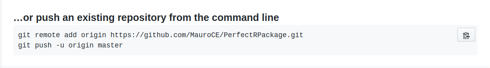
Now go back to your terminal, paste the commmands and this will connect the repository upstream.
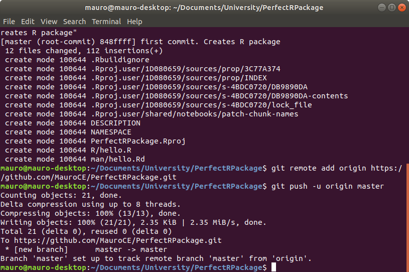
Next, we want to add a README.md file. This will be the “welcome page” of our GitHub repository. To do so, simply go on the PerfectRPackage repository on GitHub and click on Create New File button on the right of the screen. This will load the following page. Call your file README.md and write some useful description.
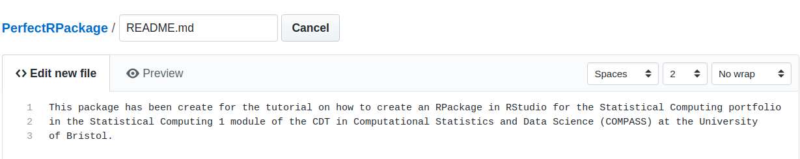
Next, scroll to the bottom of the page, add a comment to describe what you’re doing and commit to the master branch, as show in the following screenshot.
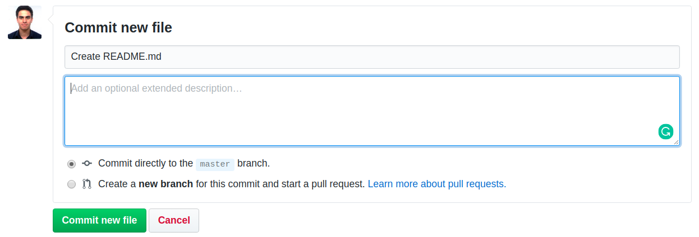
Click Commit new file. Next, we need to get these changes on our local version of the repository, so open up the terminal in the package directory, which is PerfectRPackage in this case. Type in git status to see what’s going on in your local repository. If everything is up to date and you don’t have any changes pending to be staged, simply type git pull. Otherwise, add your changes by typing git add . and then commit them with some useful message, using the command git commit -m"" as shown below.
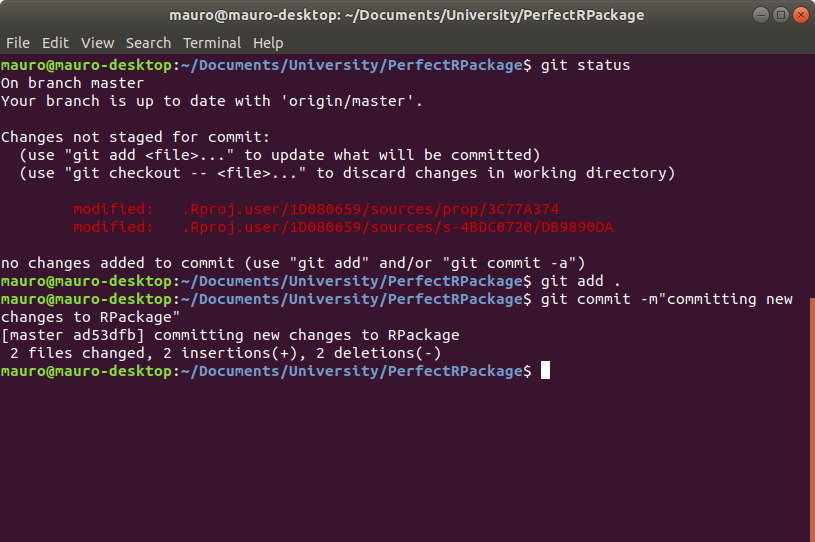
Next type
git fetch origin --prunefollowed by
git rebase --preserve-merges origin/masterThis will allow you to finally push your changes using git push.
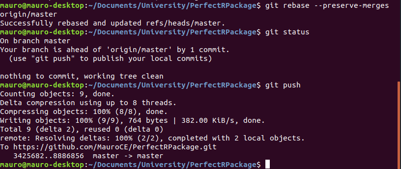
First of all, we need to install some packages. Open RStudio, go to the console and type
install.packages(c("devtools", "roxygen2", "testthat", "knitr"))When they’re finished installing, simply load the devtools package by typing
library(devtools)Now we want to add an author to the package. So type in something like this
mauro <- person(given="Mauro", family="Camara Escudero", email="maurocamaraescudero@gmail.com")and assign it to the author variable by typing
devtools.desc.author = mauroNow it’s time to add a LICENCE to our Package. The easiest way to add an MIT license is to type
use_mit_license("Mauro Camara Escudero")Now, we can add some documentation with Roxygen. To do this, simply open the hello.R script and click anywhere on the body of the hello function. Then, in the menu click
Code > Insert roxygen skeletonTo add a documentation skeleton. Remember to save the R script file. Now it’s time to actually create the documentation. Since the file NAMESPACE was created by RStudio and not by Roxygen, we can delete such file for now. Then, go to the console and type
document()This will re-create the NAMESPACE file and add a new folder called man, containing markdown documents with the documentation. The next thing to do is to install the package. Go to the console and type
install()Next, we want to create some tests. Type
use_testthat()and you should get an output that looks like this
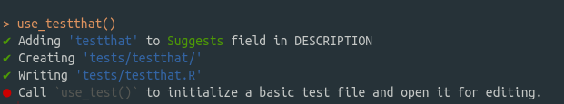
To create a new test file for the function hello go to the console and type
use_test("hello")This will create a new file called test-hello.R, which will look like this
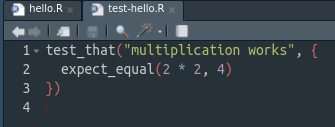
Modify this function to do a sensible test. For instance, give a sensible name and check that the function hello actually prints Hello, World!. It should look like this:
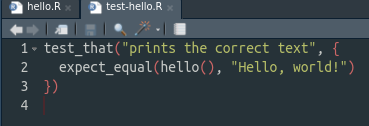
Now we can actually test our function. To do so, go to the console, load the testthat package by typing
library(testthat)Then load the PerfectRPackage in the console by typing
load_all()and test it using
test()Hopefully, the test will be fine and you should obtain a summary of the testing that looks like this:
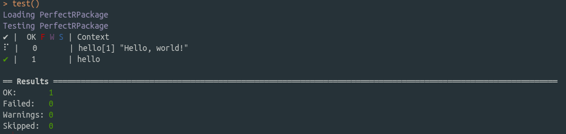
At this point you could push all the new changes to the upstream repository. Notice that if you did not create a README.md file, you can create it now together with its RMarkdown version by typing the following in the console
use_readme_rmd()If you do this, remember to re-knit the README document before committing the changes.
To do continuous deployment, go on https://travis-ci.com/ and login with your GitHub account, granting access to the repositories for which you want continuous development. Next, create a new text file called .travis.yml and paste the following content
language: r
dist: xenial
cache: packages
branches:
only:
- master
r_github_packages:
- r-lib/covr
after_success:
- Rscript -e 'covr::codecov()'commit the changes. From the next commit, travis will start building and testing your package. Go on the travis website and you should be able to see a screen looking like this
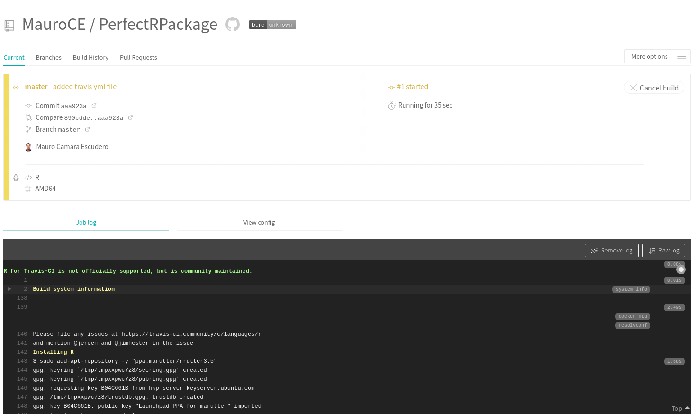
If you want to add a badge to your README.md file, simply go on the travis website shown above and click on the badge saying build unknown. Select Markdown
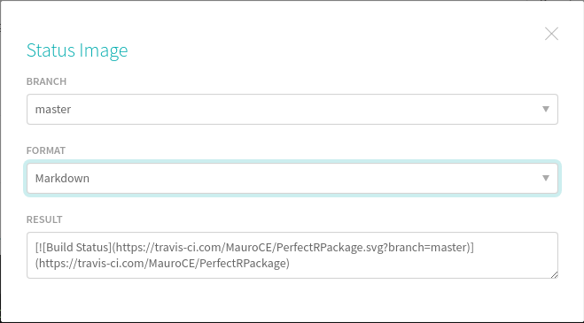
Copy the text in the last cell, go into your README.rmd file and type it under the comments saying where to add the badge, like shown in the picture below
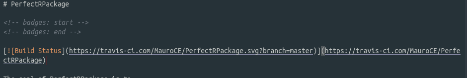
Save the RMarkdown file. If everything went well, in the travis website you should now see a successful build.
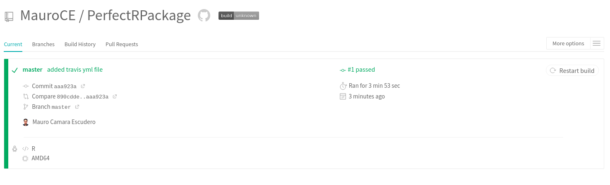
Finally, knit the README.rmd and then push your changes to the upstream directory, and you should then be able to see the badge on your README.md file on GitHub.
Go to GitHub and click on your profile image on the top right corner to toggle the menu. Click on Settings and then click to the bottom option Developer Settings. Here, click on Personal access tokens and click on Generate new token. Make sure that public_repo is selected.
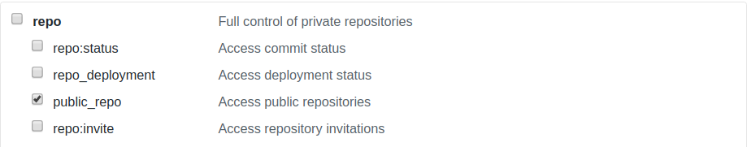
Copy the token and go to the travis website. In the successful build, click on More options on the right of the screen and choose Settings.
Scroll down to Environment Variables. Here, choose a name that will be used as a variable holding your personal access token. For instance GITHUB_PAT and paste your Personal Access Token from github in the value box. Then click Add. In the following screenshot I show you where you should be adding this information, without actually adding it for security reasons
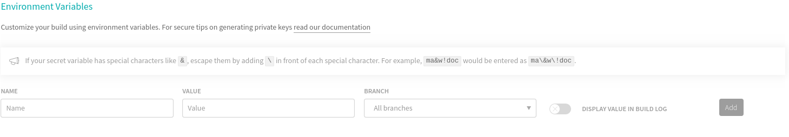
Now go into the .travis.yml file and change the content to
language: r
dist: xenial
cache: packages
branches:
only:
- master
r_packages:
- rmarkdown
script:
- Rscript -e 'rmarkdown::render("website.Rmd", output_dir="public")'
deploy:
provider: pages
skip_cleanup: true
github_token: $GITHUB_PAT
on:
branch: master
local_dir: public
target_branch: gh-pagesMake sure that the setting github_token is set to the same name that you’ve given to the github token on travis, in this case GITHUB_PAT. Notice how we’ve set target_branch: gh-pages. Go on GitHub and create a new branch called gh-pages. To do so, click Branch:master type gh-pages and click at the bottom where it says Create branch: gh-pages.
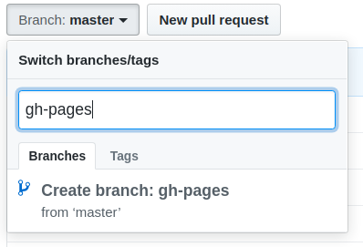
Finally, notice how we’ve told travis to build the website for website.Rmd RMarkdown file. This doesn’t exist yet, so we’ll create it now. Go to RStudio and create such file in the main folder PerfectRPackage.
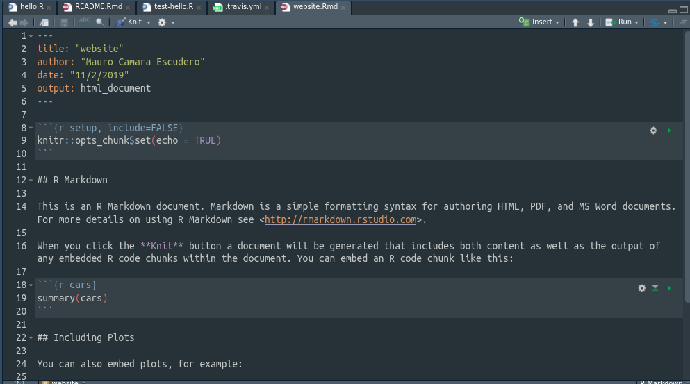
Finally, add, commit and push the changes so that travis can build the website. When travis build will be successful, your website will be available at https://mauroce.github.io/PerfectRPackage/website.html.
To add a codecov badge, go to www.codecov.io and login with github. In the PerfectRPackage repository click on Settings and on Badge on the left hand side of the screen. Copy the code under Markdown, as shown below
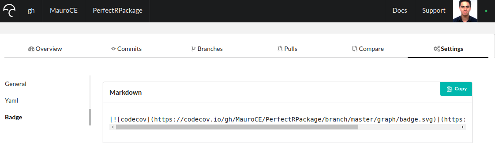
and paste it under the travis build badge on the README.Rmd file. Knit it, add the changes, commit them and push them. If the build is successful, you should see a codecov badge on your README.md file on GitHub.
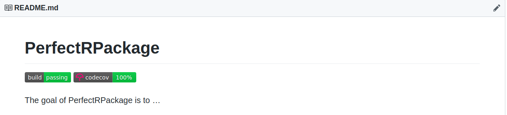